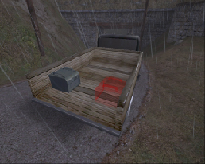

© 2003 Splash Damage, Ltd. All Rights Reserved.

| Wolfenstein: Enemy Territory Documentation © 2003 Splash Damage, Ltd. All Rights Reserved. |
|
The command map can be 256 pixels square up to 1024 in size, the game will resize the image regardless. The command map picture (stored as a .tga) has to be created externally by a paint program of your choice. The grid size and co-ordinates are worked out from the min/max keys in the worldspawn entity for the map.
| The radar dish is a
misc_gamemodel
entity with special animations for the dish rotation and fold up/down. The dish
is metal clipped as close as possible to the fold down animation and a big
player clip is put around the whole dish.
The radar box is a team_CTF_redflag entity with a custom model. The radar dish is surrounded with a trigger_objective_info brushwork entity that targets a misc_commandmap_marker entity. |
|
|  | The truck is a
misc_gamemodel
entity. The radar boxes exist in two states in the back of the truck. One
version is the standard model skin and the other one is a red coloured
transparent shader.
The back of the truck has a brushwork trigger_flagonly_multiple entity which is setup to receive only red flags. (The stolen radar parts) The whole of the truck is surrounded with a trigger_objective_info brushwork entity that targets a misc_commandmap_marker entity. |
Scripting
The script is controlled by the two radar boxes (objectives). The
team_CTF_redflag
entity has 3 special functions: 'trigger stolen', 'trigger returned' and
'trigger captured'.
When the player touches the team_CTF_redflag entity the game will call the function 'trigger stolen'. The script will make the radar box model by the radar dish invisible and fold down the radar dish model.
If the player is killed and the opposite team touches the fallen radar box the game will call the function 'trigger returned'. The script will make the radar box model by the radar dish solid again and fold up the radar dish model.
When the player touches the trigger_flagonly_multiple entity with the correct flag type the game calls the function 'death'. The script sets the map objective counter and checks if the game is finished or not. (It's certainly possible to have more than 2 objective flags)
The game also calls the function 'trigger captured' for the team_CTF_redflag entity. The script will switch the radar boxes in the back of the truck. (Each radar box in the back of truck has a red transparent and solid version as a visual clue to the players)